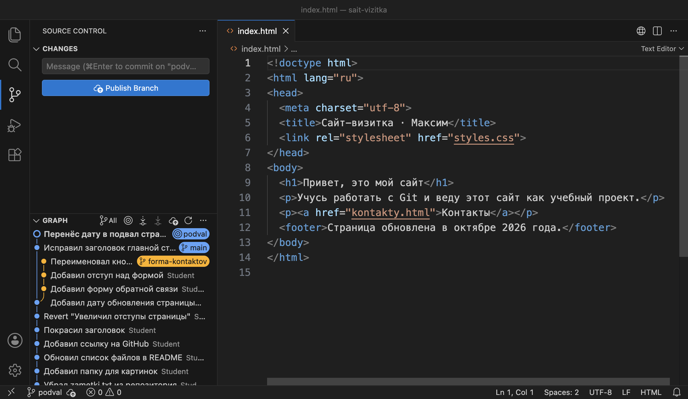
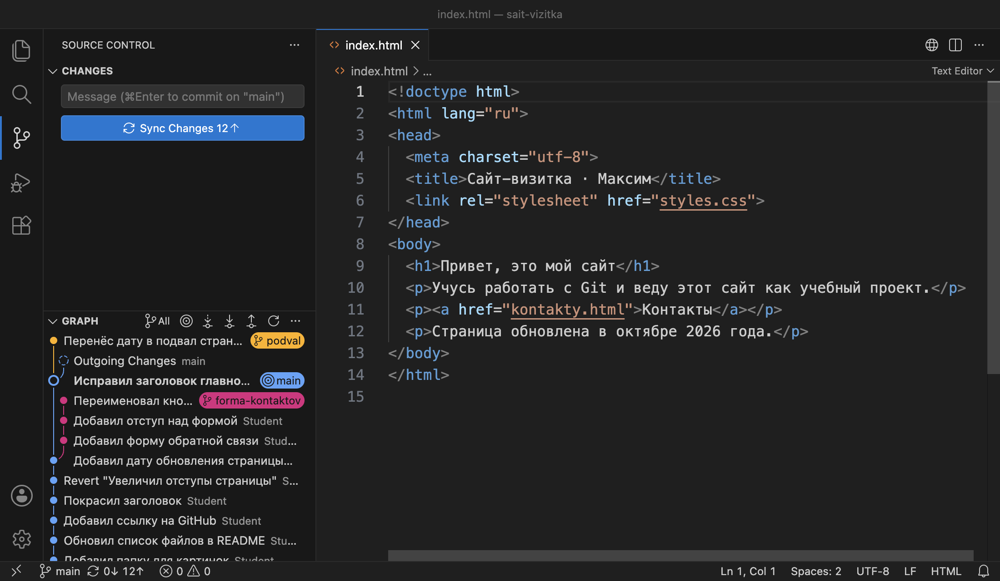
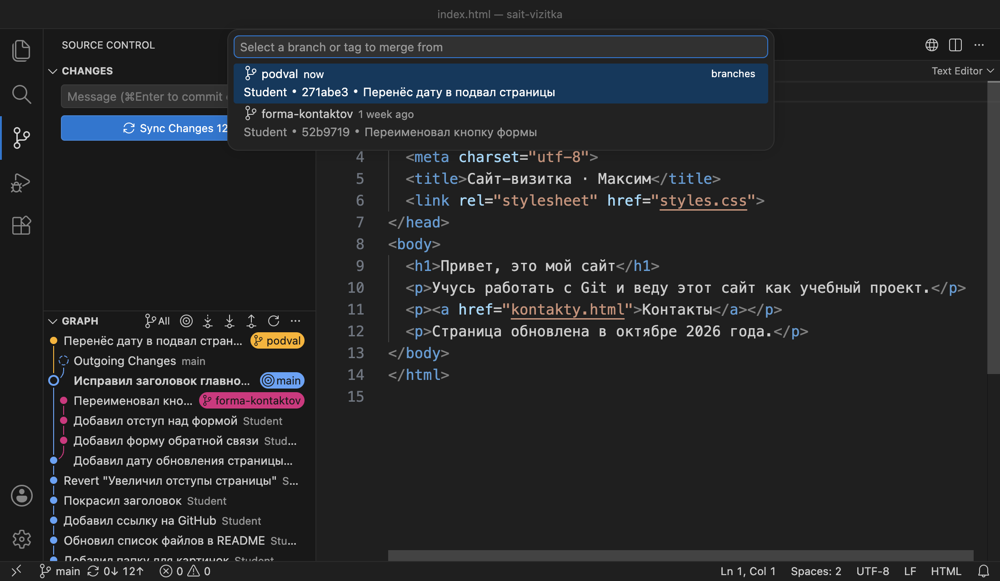
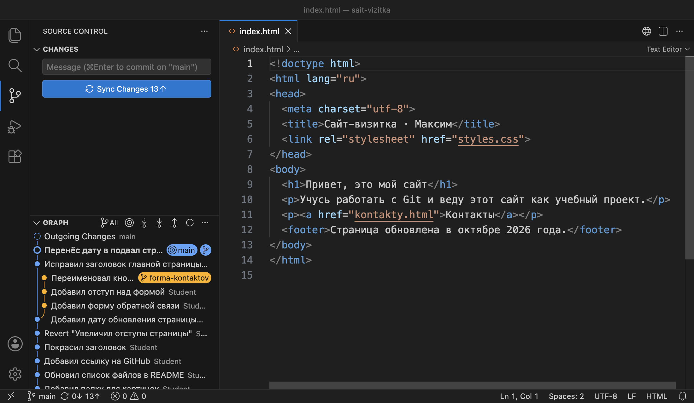
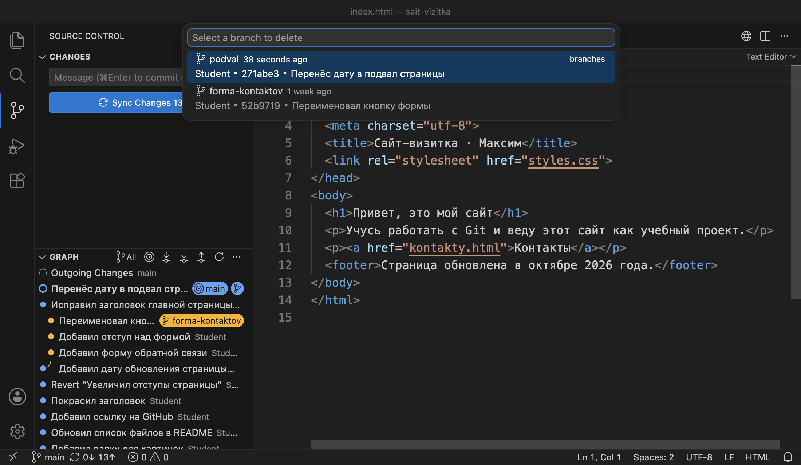
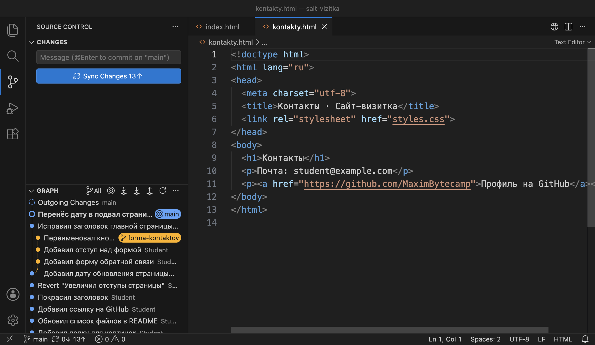
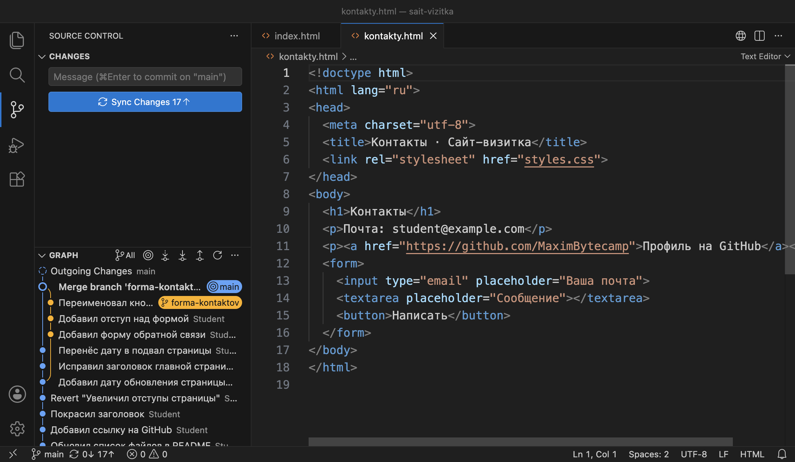
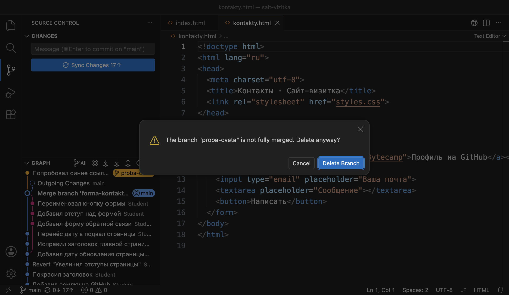

Справочник по Git и GitHub · модуль 3 · ветки
Глава 3.3
Слияние:
fast-forward и обычное
В главе работа из двух веток проекта sait-vizitka собирается в main. Сначала сливается короткая ветка, после которой main не менялась, — Git переносит имя ветки вперёд. Затем сливается ветка формы, которая разошлась с main, — Git создаёт коммит слияния. В конце разобрано, как удалить слитые ветки и почему Git не даёт удалить неслитую.
- Категория
- Ветки
- Уровень
- Начальный
- Что получится
- Форма и подвал страницы в ветке
main, лишних веток нет - Сколько занимает
- Около тридцати минут за компьютером
§1Задача главы
Глава 3.2 закончилась так: в ветке forma-kontaktov три коммита с формой обратной связи, в main — исправленный заголовок главной страницы. Коммиты одной ветки не попадают в другую, пока ветки не слиты, поэтому на сайте из ветки main формы пока нет. Перенести работу из одной ветки в другую — задача слияния.
Слияние (merge) — действие, после которого в текущей ветке есть все коммиты другой ветки. Сливают в ту ветку, на которой стоите: чтобы форма попала в main, сначала переходят на main, затем выбирают ветку forma-kontaktov как источник. Ветка-источник от слияния не меняется.
Как Git выполнит слияние, зависит от того, менялась ли текущая ветка после того, как от неё отделилась другая. Если не менялась, Git переносит её имя вперёд и нового коммита не создаёт. Если менялась, линии истории разошлись, и Git создаёт отдельный коммит, который их соединяет. В главе показаны оба случая на настоящих ветках проекта. На схеме — состояние проекта в начале главы:
82fd14a идут две линии: в main один свой коммит, в forma-kontaktov три. Вы стоите на main.На схеме main менялась после отделения ветки формы, поэтому её слияние будет вторым случаем, с отдельным коммитом. Первый случай, перенос имени, показан на новой короткой ветке.
Ассоциация: закладки в тетради из главы 3.1
В тетради две закладки. Пока вы писали дальше по второй закладке, первую никто не трогал. Чтобы первая закладка тоже отмечала последние записи, её достаточно переложить на страницу второй. Новых страниц не появляется.
Так работает fast-forward: имя main переносится на последний коммит другой ветки. Когда же записи велись по обеим закладкам с одной и той же страницы, переложить закладку нельзя: потеряются записи первой. Тогда Git пишет новую страницу, которая продолжает обе линии, — коммит слияния.
Где не совпадаетВ тетради страницы идут одна за другой, и страницы с двумя предыдущими не бывает. В Git у коммита слияния два предыдущих коммита, и это записано в нём самом. Шаг 6 показывает эту запись.
Зачем это нужно в работе
- Закончить задачу. Работу ведут в отдельной ветке, а когда она готова, сливают в основную. Слияние — последний шаг каждой задачи.
- Собрать работу нескольких людей. Каждый ведёт свою ветку от
main. Если пока вы делали форму, коллега уже слил вmainсвою правку, ветки разошлись, и слияние будет с коммитом слияния. - Найти, когда в проект пришла задача. Коммит слияния с сообщением
Merge branch 'forma-kontaktov'отмечает в истории момент, когда работа ветки попала вmain. - Держать список веток коротким. Слитую ветку удаляют. Коммиты остаются в истории
main, а в списке веток видны только те, работа в которых идёт.
В главе используется проект sait-vizitka в том виде, в каком он остался после главы 3.2. В main шестнадцать коммитов, в forma-kontaktov три своих коммита, список изменений пуст. Имена коммитов, сделанных вами, будут отличаться от показанных. Раздел GRAPH переключён в режим All, как в шаге 6 главы 3.2: так видны обе ветки сразу. Первая часть главы показывает fast-forward.
Если проекта нет или он в другом состоянии
Архив содержит проект sait-vizitka в том состоянии, с которого начинается глава, — после главы 3.2. В нём файлы проекта, папка .git со всей историей и ветками и адрес origin. Имена коммитов, которые уже есть в архиве, совпадают с показанными в главе. Коммиты, которые вы сделаете по ходу главы, получат свои имена: имя коммита зависит от автора и времени.
- Распакуйте архив в папку, где лежат ваши проекты. Появится папка
sait-vizitka. Если папка с таким именем там уже есть, сначала переименуйте старую, например вsait-vizitka-staraya. - Откройте новую папку в VS Code: File → Open Folder →
sait-vizitka. - Проверьте обе ветки в терминале (Ctrl + `). Ответ должен совпасть с этим:
git log --oneline --graph --all -5
* 52b9719 Переименовал кнопку формы
* e3eeeb9 Добавил отступ над формой
* a727fbf Добавил форму обратной связи
| * 69f9d13 Исправил заголовок главной страницы
|/
* 82fd14a Добавил дату обновления страницы
В строке состояния — forma-kontaktov, список изменений пуст. Шаг 1 начинается с перехода на main.
Папка .git скрытая: в Finder и Проводнике её по умолчанию не видно, но VS Code и Git работают с ней как обычно. Имя и почту автора для ваших коммитов Git берёт из настроек главы 1.3. Кнопку Sync Changes не нажимайте: адрес origin ведёт в репозиторий автора справочника, и отправить туда коммиты не получится.
§2Шаг 1. Сделать короткую ветку
Первый вид слияния проще увидеть на ветке, в которой один коммит. Сделаем такую ветку для небольшой задачи: строку с датой обновления на главной странице перенесём в подвал страницы, тег <footer>.
Переходим на main: нажимаем на имя ветки в строке состояния и выбираем main. Затем в том же списке выбираем Create new branch… и вводим имя podval, как в шаге 1 главы 3.2. Новая ветка стоит на последнем коммите main, на 69f9d13.
git switch main git switch -c podval
В index.html меняем одну строку:
<p>Страница обновлена в октябре 2026 года.</p>
<footer>Страница обновлена в октябре 2026 года.</footer>
Сохраняем файл, отбираем его плюсом и делаем коммит «Перенёс дату в подвал страницы».
git add index.html git commit -m "Перенёс дату в подвал страницы"

podval. В графе её коммит стоит прямо над коммитом с меткой main, без отдельной линии. В файле строка 12 — подвал.В графе нет второй линии: коммит podval продолжает ту же цепочку, что и main. Ветка main после отделения podval не сдвигалась, поэтому podval содержит все коммиты main и ещё один свой.
Сейчас в проекте три ветки. На схеме — как они расположены.
forma-kontaktov разошлась с main ещё в главе 3.2, podval отходит от последнего коммита main. Вы стоите на podval.Что получилось.В ветке podval один новый коммит 271abe3. Ветка main стоит на 69f9d13, на один коммит позади. Чтобы подвал попал в основную ветку, этот коммит нужно перенести в main.
§3Шаг 2. Слить её в main: fast-forward
Слияние начинают с перехода на ту ветку, которая должна получить коммиты. Переходим на main. В файле снова строка <p>, подвала нет: файлы в папке соответствуют последнему коммиту main.

main, метка podval на коммит выше. В строке 12 прежний тег <p>. На кнопке 12↑.Слияние в VS Code запускается из палитры команд. Нажимаем CtrlCmd + Shift + P, набираем Git: Merge и выбираем Git: Merge... Открывается список веток:

main в списке нет: сливают в неё.Выбираем podval. Слияние выполняется сразу, без окна подтверждения. В терминале то же действие — команда git merge с именем ветки-источника:
git merge podval
Updating 69f9d13..271abe3
Fast-forward
index.html | 2 +-
1 file changed, 1 insertion(+), 1 deletion(-)
Ответ читается по строкам. Updating 69f9d13..271abe3 — ветка main переходит с коммита 69f9d13 на коммит 271abe3. Fast-forward, «перемотка вперёд», — способ, которым это сделано. Ниже, как в git log --stat, перечислены файлы, которые изменились в папке: в index.html одна строка заменена другой.

main и podval на одном коммите, в файле подвал, на кнопке 13↑. Нового коммита в графе нет.Fast-forward возможен потому, что у main нет коммитов, которых нет в podval. Объединять нечего: достаточно записать в файл ветки main имя последнего коммита podval. Git так и делает — меняет одну строку в .git/refs/heads/main и приводит файлы в папке к новому коммиту. История остаётся прямой линией.
main перенесено с 69f9d13 на 271abe3. Обе ветки теперь на одном коммите.git branch -v
forma-kontaktov 52b9719 Переименовал кнопку формы
* main 271abe3 [ahead 13] Перенёс дату в подвал страницы
podval 271abe3 Перенёс дату в подвал страницы
Ветки main и podval стоят на одном коммите 271abe3. Число в скобках выросло с 12 до 13: коммит подвала теперь входит в main и ещё не отправлен на GitHub.
Что получилось.Коммит подвала вошёл в main без нового коммита: имя ветки перенесено вперёд. Ветка podval после этого больше не нужна.
§4Шаг 3. Удалить слитую ветку
Задача подвала закончена, её коммит есть в main. Ветку podval больше не используют, поэтому её удаляют. Удаление ветки стирает только её имя — файл в .git/refs/heads. Коммит 271abe3 остаётся, потому что на нём стоит main.
В палитре команд выбираем Git: Delete Branch... и в списке — podval:

git branch -d podval
Deleted branch podval (was 271abe3).
Ключ -d (delete) удаляет ветку. В скобках Git пишет, на каком коммите стояла удалённая ветка: по этому имени ветку можно создать заново, если удалили по ошибке.
Что получилось.Веток две: main с подвалом и forma-kontaktov с формой. Ветка формы разошлась с main, и её слияние устроено иначе.
§5Шаг 4. Сравнить ветки перед слиянием
Теперь в main нужно перенести форму. Перед слиянием проверяют, какие коммиты придут и можно ли перенести имя вперёд, как в шаге 2. Это показывает git log с двумя именами веток через две точки: команда выводит коммиты, которые есть во второй ветке и которых нет в первой.
git log --oneline main..forma-kontaktov 52b9719 Переименовал кнопку формы e3eeeb9 Добавил отступ над формой a727fbf Добавил форму обратной связи git log --oneline forma-kontaktov..main 271abe3 Перенёс дату в подвал страницы 69f9d13 Исправил заголовок главной страницы
Первая команда перечисляет три коммита формы — их слияние добавит в main. Вторая показывает, что у main тоже есть два коммита, которых нет в ветке формы: заголовок из главы 3.2 и подвал из шага 2. Значит, ветки разошлись. Перенести имя main на коммит 52b9719 нельзя: тогда заголовок и подвал выпали бы из main.
Место, где ветки разошлись, похоже на развилку дороги: до неё путь общий, после неё — две дороги. В Git такое место — коммит, и он называется общим предком двух веток. Его находит команда git merge-base:
git merge-base main forma-kontaktov
82fd14a052d87f56416c01e19570b560b6e7a884
Это коммит 82fd14a «Добавил дату обновления страницы» — последний, который есть в обеих ветках. От него идут две линии.
82fd14a. У каждой ветки есть коммиты, которых нет в другой. Вы стоите на main.
kontakty.html на ветке main: формы нет, после строки 11 сразу </body>.Перед слиянием проверяют ещё две вещи: в строке состояния стоит main, а список изменений пуст. Незакоммиченная правка при слиянии ведёт себя так же, как при переключении в главе 3.2: если она в файле, который меняет слияние, Git слияние не начнёт.
Что получилось.Известно, что придёт в main: три коммита формы. Ветки разошлись от коммита 82fd14a, поэтому Git создаст отдельный коммит, который их соединит.
§6Шаг 5. Слить ветку формы в main
Действие то же, что в шаге 2: палитра команд → Git: Merge... → в списке выбираем forma-kontaktov. Результат другой, потому что ветки разошлись.
git merge --no-edit forma-kontaktov
Merge made by the 'ort' strategy.
kontakty.html | 5 +++++
styles.css | 4 ++++
2 files changed, 9 insertions(+)
Строка Merge made by the 'ort' strategy сообщает, что создан коммит слияния. ort — название способа, которым Git сводит изменения двух веток. С версии 2.34 он используется по умолчанию, выбирать его не нужно. Ниже перечислено, что изменилось в main: пять строк формы в kontakty.html и четыре строки отступа в styles.css. Файл index.html в списке не указан: ветка формы его не меняла, и в нём остались заголовок и подвал из main.
Ключ --no-edit нужен только в терминале. Коммиту слияния нужно сообщение, и без ключа Git откроет редактор, чтобы его можно было исправить. С ключом Git оставляет сообщение по умолчанию: Merge branch 'forma-kontaktov'. VS Code поступает так же и редактор не открывает.

Merge branch 'forma-kontaktov', к нему сходятся обе линии. Вы на main, и в kontakty.html есть форма. На кнопке 17↑.Коммит слияния продолжает обе линии сразу. Ветка main перешла на него, ветка forma-kontaktov осталась на 52b9719: слияние меняет только ту ветку, в которую сливают.
ea7f264 соединяет линии: у него два предыдущих коммита, 271abe3 и 52b9719. Имя main перешло на него.На кнопке 17 коммитов: было 13, пришли три коммита формы и добавился сам коммит слияния. Тот же рисунок, что в схеме, печатает терминал:
git log --oneline --graph -8
* ea7f264 Merge branch 'forma-kontaktov'
|\
| * 52b9719 Переименовал кнопку формы
| * e3eeeb9 Добавил отступ над формой
| * a727fbf Добавил форму обратной связи
* | 271abe3 Перенёс дату в подвал страницы
* | 69f9d13 Исправил заголовок главной страницы
|/
* 82fd14a Добавил дату обновления страницы
Две линии слева расходятся под 82fd14a и сходятся на ea7f264. Ключ --all здесь не нужен: все коммиты формы теперь входят в историю main.
Что получилось.В main есть форма, подвал и исправленный заголовок. Работа двух веток объединена коммитом слияния ea7f264. Чем он отличается от обычного коммита, видно по его содержимому.
§7Шаг 6. Посмотреть коммит слияния изнутри
Команда git cat-file -p печатает коммит так, как он записан в папке .git:
git cat-file -p HEAD
tree 64fbdb2d48dd183ec0e943a3f8ffef5104a147cf
parent 271abe32c3a73aea1081feee831cc7f05ea19771
parent 52b971969a49f65d4eb633e0f0b8ca9b5374c76c
author Student <student@example.com> 1792523352 +0300
committer Student <student@example.com> 1792523352 +0300
Merge branch 'forma-kontaktov'
В родословной у каждого человека записаны родители, и по этим записям восстанавливают всё семейное дерево. В коммите так же записан предыдущий коммит — его называют родителем, по-английски parent. У обычного коммита одна строка parent. По этим строкам Git строит историю: от каждого коммита назад к родителю. У коммита слияния строк parent две. Первая — 271abe3, последний коммит ветки, в которую сливали. Вторая — 52b9719, последний коммит ветки, которую сливали. Поэтому история main теперь проходит через обе линии, и git log выводит коммиты формы как коммиты main.
| Строка | Что записано |
|---|---|
tree | Состояние всех файлов проекта после слияния |
первая parent | Коммит, на котором стояла main до слияния |
вторая parent | Последний коммит ветки forma-kontaktov |
author, committer | Кто сделал слияние и когда: число секунд с 1970 года и часовой пояс |
| последняя строка | Сообщение коммита |
От порядка родителей зависит вывод команды git show с ключом --stat. Команда перечисляет файлы, которые коммит слияния изменил по сравнению с первым родителем, то есть что нового пришло в main:
git show --stat --oneline HEAD
ea7f264 Merge branch 'forma-kontaktov'
kontakty.html | 5 +++++
styles.css | 4 ++++
2 files changed, 9 insertions(+)
Что получилось.У коммита слияния два родителя: последний коммит main и последний коммит ветки формы. Имя forma-kontaktov теперь лишнее.
§8Шаг 7. Удалить ветку формы
Работа формы в main, ветку forma-kontaktov удаляем так же, как podval: палитра команд → Git: Delete Branch... → forma-kontaktov.
git branch -d forma-kontaktov
Deleted branch forma-kontaktov (was 52b9719).
Три коммита формы остались в проекте. До них можно дойти от main: через вторую строку parent коммита слияния. В графе они остаются на своей линии, пропадает только метка с именем ветки.
main, имени forma-kontaktov больше нет.Что получилось.В проекте одна ветка, main. В ней 21 коммит, 17 из них на GitHub не отправлены. Обе ветки удалены ключом -d без вопросов, потому что их коммиты уже были в main.
§9Шаг 8. Получить отказ при удалении
Ключ -d удаляет ветку, только если её коммиты уже есть в текущей ветке. Проверим, что будет с веткой, которую не сливали. Создаём ветку proba-cveta, меняем в styles.css цвет ссылок на синий #1D4ED8 и коммитим «Попробовал синие ссылки». Цвет не понравился, возвращаемся на main и удаляем ветку пробы:
git branch -d proba-cveta
error: the branch 'proba-cveta' is not fully merged
hint: If you are sure you want to delete it, run 'git branch -D proba-cveta'
Git отказал: ветка «не полностью слита». Коммит «Попробовал синие ссылки» есть только в этой ветке, и после удаления имени до него нельзя будет дойти ни от одной ветки. VS Code в том же случае спрашивает подтверждение:

Пробу решено выбросить, поэтому удаляем ветку принудительно. Кнопка Delete Branch в окне VS Code или ключ -D с заглавной буквой:
git branch -D proba-cveta
Deleted branch proba-cveta (was 922e412).
Коммит 922e412 остался в папке .git, но ни одна ветка на него не указывает, и в графе его нет. Найти его можно в журнале git reflog, как стёртый коммит в главе 2.6, — в течение тридцати дней. Поэтому -D применяют, когда точно решено, что работа ветки не нужна.
Что получилось.Ветка пробы удалена ключом -D. В проекте одна ветка main, список изменений пуст. Ниже собраны оба вида слияния и команды главы.
§10Справка: два вида слияния и команды
Какой вид слияния выполнит Git, выбирать не нужно: он определяется по истории веток.
| Fast-forward | Обычное слияние | |
|---|---|---|
| Когда бывает | Текущая ветка не менялась после отделения другой | У обеих веток есть свои коммиты |
| Ответ Git | Fast-forward | Merge made by the 'ort' strategy. |
| Новый коммит | Нет, имя ветки переносится вперёд | Да, коммит слияния с двумя родителями |
| Граф | Одна прямая линия | Две линии сходятся в коммите слияния |
| В главе | podval → main | forma-kontaktov → main |
| Что нужно | В VS Code | Команда |
|---|---|---|
| Слить ветку в текущую | Палитра команд → Git: Merge... → ветка | git merge имя |
| Слить, не открывая редактор сообщения | Так работает Git: Merge... | git merge --no-edit имя |
| Коммиты, которые придут при слиянии | Раздел GRAPH в режиме All | git log --oneline main..имя |
| Общий предок двух веток | Кнопки нет | git merge-base main имя |
| Удалить слитую ветку | Палитра команд → Git: Delete Branch... | git branch -d имя |
| Удалить неслитую ветку | Git: Delete Branch... → Delete Branch в окне | git branch -D имя |
| Список уже слитых веток | Кнопки нет | git branch --merged |
Команда git merge --no-ff имя создаёт коммит слияния даже там, где возможен fast-forward. В части команд так договариваются, чтобы в истории main каждая задача была отмечена своим коммитом слияния. Слияние через запрос на слияние (pull request) на GitHub по умолчанию тоже создаёт коммит слияния.
§11Частые вопросы
main, нужно стоять на ветке формы и выбрать main.main и выбирают в Git: Merge... ветку формы. Слияние в обратную сторону перенесёт коммиты main в ветку формы.main и исчезает.main. Неслитую ветку Git без ключа -D не удалит.parent. Коммит слияния записывает итоговое состояние файлов после объединения.§12Проверьте себя
Нужно перенести коммиты ветки temnaya-tema в main. С чего начать?
Перейти на main и проверить, что список изменений пуст. Затем палитра команд → Git: Merge... → temnaya-tema, или git merge temnaya-tema.
Git ответил Fast-forward. Появился ли новый коммит?
Нет. Текущая ветка не менялась после отделения другой, поэтому Git перенёс её имя на последний коммит сливаемой ветки. История осталась прямой линией.
Как до слияния узнать, какие коммиты придут в main из ветки forma-kontaktov?
git log --oneline main..forma-kontaktov — коммиты, которые есть в ветке формы и которых нет в main. В VS Code — раздел GRAPH в режиме All.
Чем коммит слияния отличается от обычного?
У него две строки parent: последний коммит ветки, в которую сливали, и последний коммит сливаемой ветки. Поэтому история текущей ветки проходит через обе линии.
На кнопке было 13↑, после слияния ветки с тремя коммитами стало 17↑. Откуда четвёртый коммит?
Это сам коммит слияния. Ветки разошлись, и Git создал коммит, который их соединяет: три коммита ветки плюс один коммит слияния.
Git ответил the branch 'proba-cveta' is not fully merged. Что это значит и что делать?
В ветке есть коммиты, которых нет в текущей ветке, и после удаления до них нельзя будет дойти. Если работа нужна — слить ветку. Если точно не нужна — удалить ключом -D или кнопкой Delete Branch в окне VS Code.
§13Шпаргалка по главе
стоите на ветке, куда сливают
список изменений пуст
Git: Merge... → ветка
git merge имя
git merge --no-edit имя
git log --oneline main..имя
git merge-base main имя
Fast-forward — имя перенесено
Merge made by … — коммит слияния
git cat-file -p HEAD
две строки parent
Git: Delete Branch...
git branch -d имя — слитую
git branch -D имя — любую
Итог главы
Слияние переносит в текущую ветку коммиты другой ветки, поэтому сначала переходят на ветку, которая должна их получить, и проверяют, что список изменений пуст. В VS Code слияние запускает команда Git: Merge... из палитры, в терминале — git merge. Если текущая ветка не менялась после отделения другой, Git делает fast-forward: переносит её имя на последний коммит другой ветки, нового коммита нет. Так в main пришёл подвал страницы. Если у обеих веток есть свои коммиты, Git находит общего предка, сводит изменения и создаёт коммит слияния с двумя родителями. Так в main пришла форма. Слитую ветку удаляют командой Git: Delete Branch... или git branch -d: стирается только имя, коммиты остаются в истории. Неслитую ветку Git без подтверждения или ключа -D не удаляет. В этой главе ветки меняли разные файлы и разные строки, поэтому Git свёл их изменения без участия человека.
- Кадры и ответы команд получены на клоне проекта sait-vizitka в Git версии 2.51.1 и VS Code версии 1.138.
- Fast-forward, коммит слияния, ключи
--no-editи--no-ff— документация git-merge. - Способ слияния
ortи его выбор по умолчанию с версии 2.34 — документация merge-strategies и заметки к выпуску Git 2.34. - Ключи
-d,-D,--merged— документация git-branch;git merge-base— документация git-merge-base. - Устройство коммита и строки
parent— книга Pro Git, глава «Git изнутри». - Команды Git: Merge и Git: Delete Branch — документация VS Code, раздел Source Control.